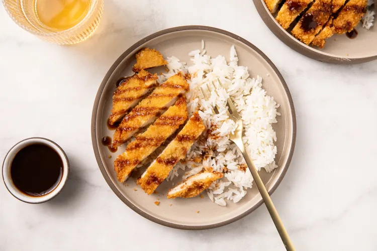

Ingredients
- 2 tablespoons ketchup
- 1 tablespoon soy sauce
- 2 teaspoons Worcestershire sauce
- 2 teaspoons granulated sugar
- 2 boneless, skinless chicken breasts (about 1 1/2 pounds total), halved horizontally into 4 cutlets
- 2/3 cup all-purpose flour
- 1 tablespoon kosher salt, plus more for seasoning
- 2 large eggs, beaten
Steps
- Prepare a baking sheet for draining: Line a baking sheet with a metal cooling rack.
- Make the katsu sauce:
In a small bowl, combine the ketchup, soy sauce, Worcestershire sauce, and sugar. Stir until the sugar dissolves and set aside.
- Prepare the chicken:
Working in batches, place two chicken breast halves in a 1-gallon zip-top bag and press out the excess air before sealing. Using a meat mallet or rolling pin, pound the chicken from the center outward until evenly 1/4-inch thick. Repeat with the remaining chicken breast halves.
- Set up the breading station:
Place the flour in one shallow bowl or plate. Add the salt and pepper and stir to combine. Add the beaten eggs to a second shallow bowl and the panko to a third.
- Heat the oil:
In a 10-inch cast iron skillet, heat the oil over high heat until it reaches 350°F.
- Dredge the chicken:
While the oil heats up, dredge the chicken cutlets in the flour one at a time, shaking off any excess. Dip into the beaten egg, then press into the panko until evenly coated. Set aside on a plate until the oil is hot.
- Fry the chicken:
Reduce the heat under the oil to medium-high. Gently lower 2 of the breaded cutlets into the hot oil and fry, rotating occasionally and adjusting the heat as necessary to maintain 350ºF, until the cutlets are golden brown and cooked through, 2 to 3 minutes per side. The chicken should reach an internal temperature of 165°F. Transfer the cooked katsu to the prepared wire rack and season immediately with additional salt, to taste.
Make sure the oil comes back up to 350°F before frying the remaining 2 cutlets.